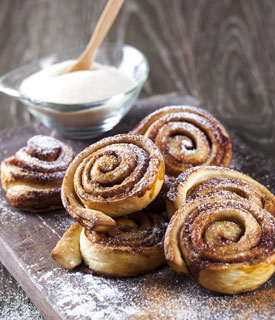

Cinnamon Buns
Home

Inspired from the Nordic countries, these delicious buns will give you the perfect balance of sweetness and cinnamon.
Ingredients
Buns:
- 50 grams fresh yeast or 26g active dried yeast
- 500 ml whole milk
- 150 grams melted butter
- 80 grams caster/granulated sugar
- 900-1000 grams white strong bread flour
- 3 generous teaspoons ground cardamom
- 1 teaspoon salt
- 1 egg beaten
Filling:
- 200 grams butter soft
- 1 teaspoon plain flour
- 2-3 tablespoons ground cinnamon (25g)
- ½ teaspoon ground cardamom
- ½ teaspoon vanilla sugar or extract
- 100 grams caster sugar
- 100 grams soft brown light sugar
- 1 egg for brushing
- pearl sugar to decorate
- golden syrup and date syrup equal measures (100ml of each)
Instructions
- Cream all the ingredients for filling together until smooth and set aside.
Make the dough:
- If using fresh yeast, add the luke warm milk to your mixing bowl in a stand mixer and add the yeast; stir until dissolved.
- (If using active dry yeast (granules), pour the warm milk into a bowl, sprinkle in the yeast and whisk together. Cover with cling film and leave in a warm place for about 15 minutes to become bubbly. Pour into the bowl of a food mixer fitted with a dough hook).
- Start the machine and add the cooled, melted butter. Allow to combine with the yeast for 1 minute or so, then add the sugar and mix for a minute.
- In a separate bowl, weigh out 800g of flour, add the cardamom and salt and mix together. Start adding the flour and spices into the milk mixture, bit by bit. Add the beaten egg. Keep kneading for 5 minutes.
- You may need to add more flour – you want the mixture to end up a bit sticky, but not so much that it sticks to your finger if you poke it. It is better not to add too much flour as this will result in dry buns – and you can always add more later. The mixture has enough flour when it starts to let go of the sides of the bowl.
- Once mixed, leave the dough in a bowl and cover with a clingfilm. Allow to rise for around 30 minutes – or until it has doubled in size (this time can vary depending on the temperature in your kitchen).
- Dust a table top with flour and turn out the dough. Using your hands, knead the dough and work in more flour if needed. Cut the dough into two equal pieces and using a rolling pin, roll out one lump of dough to a 40 x 50 cm/16 x 20 in. rectangle.
- Using a spatula, spread the filling across the dough in an event, thin layer.
Traditional Swirls:
- Simply roll the dough lengthways into a long roll and cut into 15-16 pieces, place on a lined baking tray, and leave – covered – to rise for another 20 minutes. Repeat with the remaining lump of dough.
Bake:
- Heat the oven to 200 degrees Celcius (fan). Brush the buns lightly with beaten egg, then bake for 7-9 minutes or until golden and done. Watch it, they can burn easily and different ovens vary in temperature: My oven bakes these on 180C fan in 8 minutes.
- While they are baking, heat the golden syrup and date syrup in a pan until warm and liquid. If you cant get hold of date syrup, just use golden –but Date syrup does add a lovely flavour to the buns.
- When the buns come out of the oven, immediately brush lightly with the syrup, then add pearl sugar (nibbed sugar) on top of the buns and cover with a quite damp tea towel. The tea towel stops the buns from going dry and forming a crust – leave it on there for at least five minutes.
- If you cannot get hold of nib sugar (pearl sugar), you can use chopped hazelnuts etc instead as an alternative.
- The buns last only for 24-36 hours – as with all fresh bread – so freeze as soon as they have cooled down if you cant eat 36 buns in one go.
Source